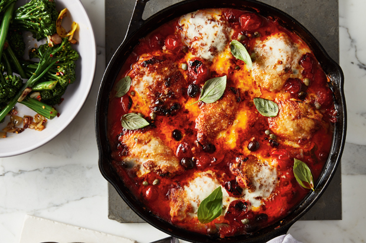
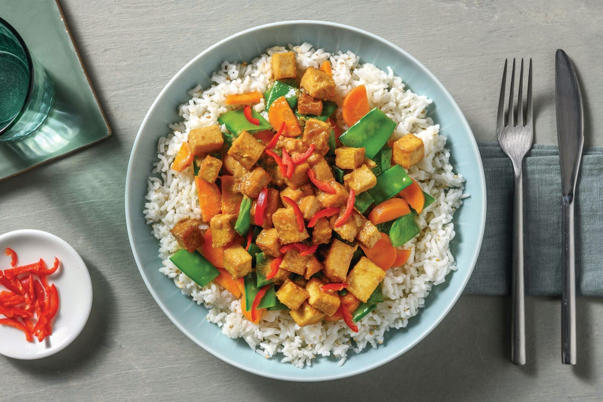
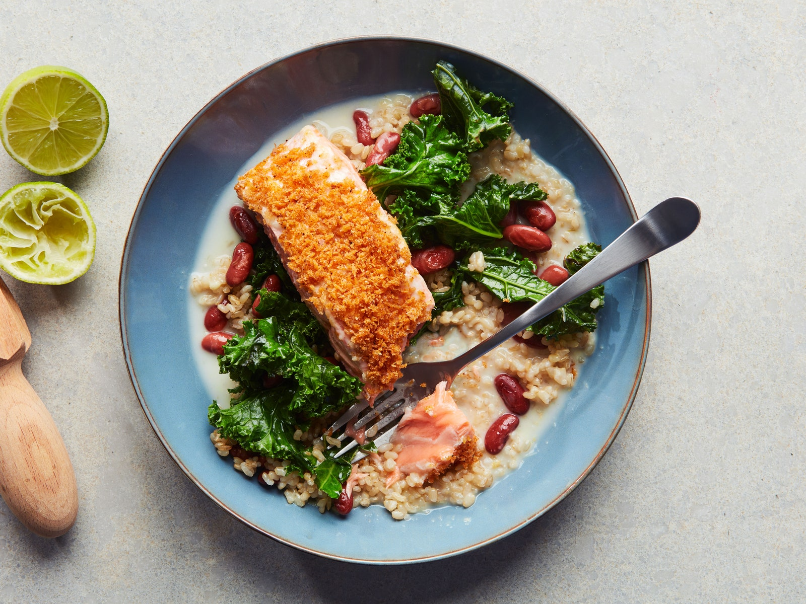

Popular recipes

Creamy Tomato Basil Soup Recipe
This comforting soup is made with fresh tomatoes, aromatic basil, and a touch of cream.
- Servings: 4-6
- Prep Time: 20 minutes
- Cook Time: 30 minutes
- Total Time: 50 minutes
Ingredients
- 2 tablespoons butter
- 1 medium onion, chopped
- 3 cloves garlic, minced
- 2 cups fresh tomatoes (or 1 can of diced tomatoes)
- 1 cup chicken or vegetable broth
- 1/2 cup heavy cream or half-and-half
- 1 tablespoon dried basil
- 1 teaspoon salt
- 1/2 teaspoon black pepper
- Fresh basil leaves for garnish
Instructions:
- Melt butter in a large pot over medium heat.
- Add onion and garlic; cook until softened (5 minutes).
- Add tomatoes, broth, basil, salt and pepper. Bring to a boil, then reduce heat and simmer (20 minutes).
- Purée soup with an immersion blender or regular blender.
- Stir in heavy cream. Serve hot, garnished with fresh basil.
Tips and Variations:
- Use fresh, high-quality tomatoes for best flavor.
- Add grilled chicken or croutons for added protein and texture.
- Substitute coconut cream for dairy-free option.
- Adjust basil to taste.
Nutrition Information (per serving):
- Calories: 220
- Fat: 14g
- Saturated Fat: 8g
- Cholesterol: 40mg
- Sodium: 400mg
- Carbohydrates: 20g
- Fiber: 4g
- Sugar: 10g
- Protein: 5g

Spicy Shrimp Tacos Recipe
These tacos are loaded with juicy shrimp that have been mixed in a spicy blend of chill powder.
- Servings: 4-6
- Prep Time: 15 minutes
- Cook Time: 10 minutes
- Total Time: 25 minutes
Ingredients
- 1 pound large shrimp, peeled and deveined
- 1/2 teaspoon ground cumin
- 1/4 teaspoon smoked paprika (optional)
- 1/4 teaspoon cayenne pepper (adjust to taste)
- 1/2 teaspoon salt
- 1/4 teaspoon black pepper
- 2 tablespoons lime juice
- 1 tablespoon olive oil
- 8-10 corn tortillas
- Sliced radishes, lime wedges, cilantro, avocado or sour cream (for garnish)
- Spicy Slaw
Instructions:
- In a bowl, mix cumin, smoked paprika, cayenne, salt and pepper.
- Add shrimp and lime juice; marinate for 5-10 minutes.
- Heat olive oil in a skillet over medium-high. Cook shrimp until pink and cooked through (2-3 minutes per side).
- Warm tortillas by wrapping in a damp paper towel and microwaving for 20-30 seconds.
- Assemble tacos: shrimp, Spicy Slaw, radishes, cilantro, avocado or sour cream.
Tips and Variations:
- Use pre-cooked shrimp or substitute chicken or carnitas.
- Adjust cayenne pepper to desired spice level.
- Add diced onions, bell peppers or mushrooms to skillet with shrimp.
- Serve with salsa, hot sauce or Mexican crema.
Nutrition Information (per serving):
- Calories: 250
- Fat: 10g
- Saturated Fat: 1.5g
- Cholesterol: 150mg
- Sodium: 350mg
- Carbohydrates: 20g
- Fiber: 4g
- Sugar: 5g
- Protein: 20g

Chicken Parmesan Recipe
This classic italian dish features tender chicken breasts coated in crsipy breadcrumbs.
- Servings: 4
- Prep Time: 15 minutes
- Cook Time: 25 minutes
- Total Time: 40 minutes
Ingredients
- 4 boneless, skinless chicken breasts
- 1 cup all-purpose flour
- 1 tsp salt
- 1/4 tsp black pepper
- 1/4 tsp Italian seasoning
- 2 cups breadcrumbs (Panko or regular)
- 1 cup grated Parmesan cheese
- 2 large eggs
- 1 cup marinara sauce
- 1 cup shredded mozzarella cheese
- Olive oil for frying
- Fresh basil leaves for garnish
Instructions:
- Prepare breading station: flour, eggs, breadcrumbs mixed with Parmesan.
- Season chicken with salt, pepper and Italian seasoning.
- Dip chicken in flour, then eggs, then breadcrumbs.
- Heat 1/2 inch olive oil in skillet over medium-high. Fry chicken until golden (3-4 minutes per side).
- Transfer chicken to baking dish. Spoon marinara sauce over each breast.
- Top with mozzarella cheese. Bake at 400°F (200°C) for 15-20 minutes or until melted and bubbly.
- Garnish with basil. Serve with pasta or garlic bread.
Tips and Variations:
- Use homemade marinara sauce or store-bought.
- Add sliced ham or prosciutto for extra flavor.
- Substitute chicken tenders or cutlets.
- Serve with sautéed vegetables or roasted potatoes.
Nutrition Information (per serving):
- Calories: 420
- Fat: 24g
- Saturated Fat: 8g
- Cholesterol: 80mg
- Sodium: 450mg
- Carbohydrates: 20g
- Fiber: 2g
- Sugar: 5g
- Protein: 35g

Chocolate Chip Cookies Recipe
These cookies are the perfect balance of chewy and crispy, with goocy pockets of melted.
- Servings: 12-15
- Prep Time: 10 minutes
- Cook Time: 10-12 minutes
- Total Time: 20-22 minutes
Ingredients
- 2 1/4 cups all-purpose flour
- 1 tsp baking soda
- 1 tsp salt
- 1 cup (2 sticks) unsalted butter, softened
- 3/4 cup white granulated sugar
- 3/4 cup brown sugar
- 2 large eggs
- 2 tsp pure vanilla extract
- 2 cups semi-sweet chocolate chips
Instructions:
- Preheat oven to 375°F (190°C). Line baking sheet with parchment paper.
- Whisk flour, baking soda and salt in a bowl.
- Cream butter and sugars in a separate bowl until light and fluffy (2-3 minutes).
- Beat in eggs and vanilla extract.
- Gradually mix in flour mixture until just combined.
- Stir in chocolate chips.
- Scoop tablespoon-sized balls onto baking sheet, leaving 2 inches of space.
- Bake until golden brown (10-12 minutes).
- Remove and let cool on baking sheet for 5 minutes before transferring to wire rack.
Tips and Variations:
- Use high-quality chocolate for best flavor.
- Add-ins: nuts (walnuts, pecans), dried cranberries or cherries.
- Substitute browned butter for richer flavor.
- Chill dough for 30 minutes to improve texture.
- Bake at 400°F (200°C) for crisper edges.
Nutrition Information (per serving):
- Calories: 120
- Fat: 7g
- Saturated Fat: 4g
- Cholesterol: 15mg
- Sodium: 50mg
- Carbohydrates: 17g
- Fiber: 1g
- Sugar: 8g
- Protein: 2g